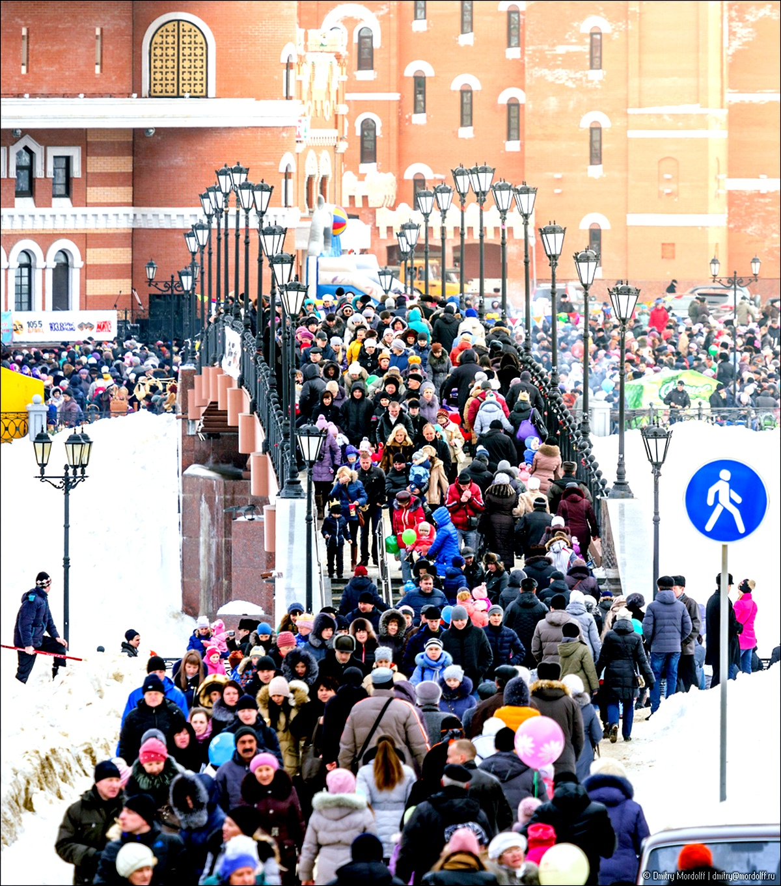
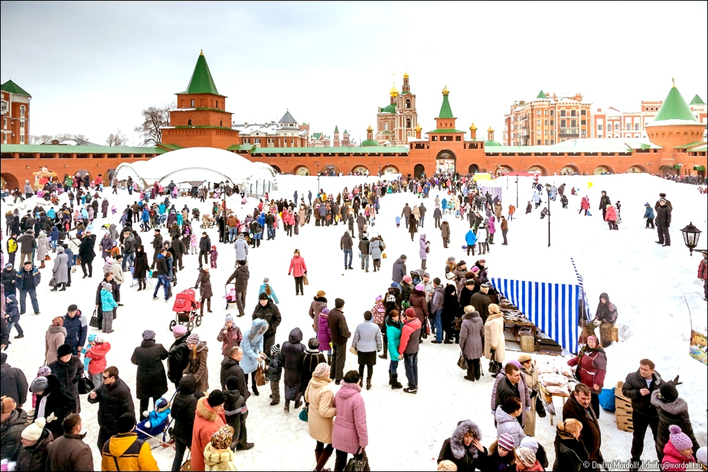
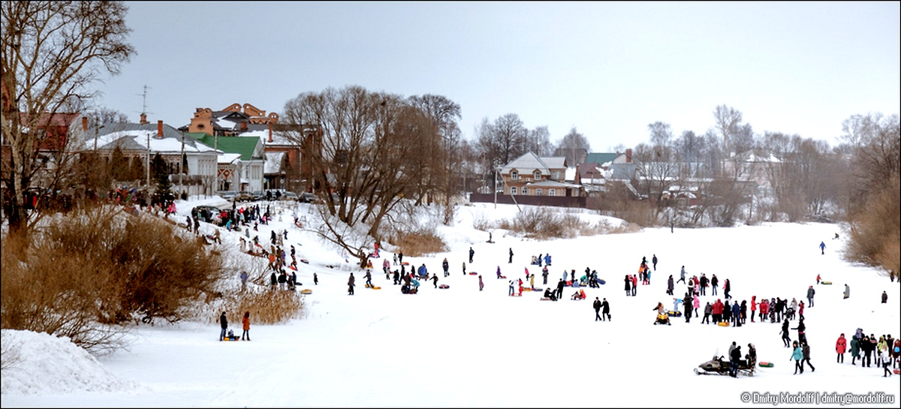

На Патриаршей набережной - народное гулянье за Масленицу. По мосту "от монарха к патриарху" валит народ.

В Царевококшайский Кремль (не ржать!) - лопать блины и жечь её родимую. Запечатлел Дима
 mordolff
mordolff Теперь уже наш, Ёш-Каралинский Кустодиев.

Или, не побоюсь этого слова

Как не Брейгель? А кто же тогда?